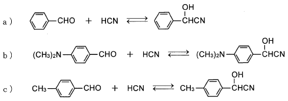

平成26年度 問7 化学プロセス
カルボニル基に対するHCNの付加は可逆反応である。芳香族アルデヒドにHCNが 付加してシアノヒドリン類が生成する反応 a) ～ c) を平衡定数（K）の大きい順に並べ たものはどれか。ただし、平衡定数（K）は、一定の条件（20℃、96%エタノール中）のもので、K＝ ［シアノヒドリン］／［芳香族アルデヒド］［HCN］ とする。

①
a-b-c
②
a-c-b
③
b-c-a
④
b-a-c
⑤
c-b-a
正答
② a-c-b
化合物はベンズアルデヒド（a）にジメチルアミノ基が付加したもの（b）とメチル基が付加したもの（c）の3種類です。それぞれの置換基が反応性に及ぼす影響、つまり電子供与・吸引能力を考えます。
シアノヒドリン合成の反応は、シアン化物イオン（CN–）がアルデヒドのδ+性を帯びた炭素原子へ攻撃することで進みます。つまりベンズアルデヒドに結合した置換基が、アルデヒドの炭素原子にある電子を吸引しδ+性を強くする置換基であるほど反応性は上がります。今回の場合、ジメチルアミノ基 ＞ メチル基 ＞ 無置換の順で吸引性が高くなります。